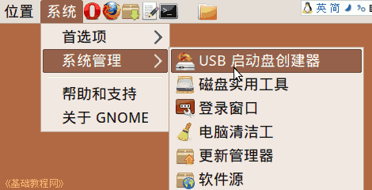
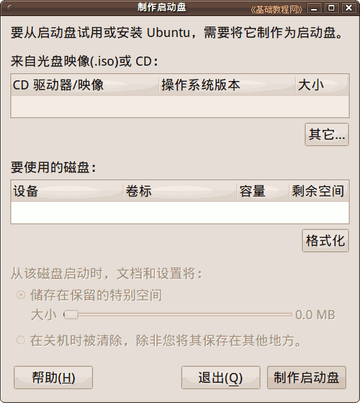
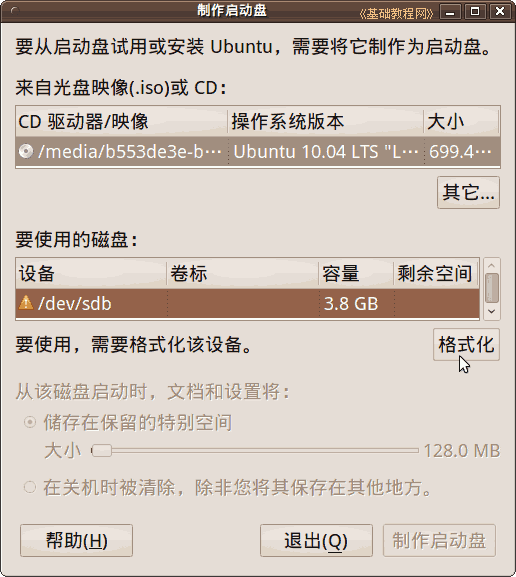
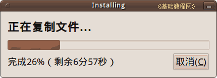

Ubuntu/GNOME 桌面程序指南
作者：TeliuTe 来源：基础教程网
三十一、创建 USB 启动安装盘 返回目录 下一课在这里，您可以创建一个U盘安装盘，用以启动系统并安装；
1、USB 启动盘创建器
1）点菜单“系统 - 系统管理 - USB 启动盘创建器”，打开创建窗口，新版12.04的参考：http://teliute.org/linux/TeUbt/lesson60/lesson60.html

2）出来的面板中，上面选择光盘或者ISO镜像文件，中间选择U盘移动磁盘，下面设置保存选项；

3）选择镜像、插入 U 盘后，点“制作启动盘”开始，注意它会格式化所选的 U 盘，重要文件提前备份到别的地方，
如果 U 盘前面有黄色叹号，则需要先点“格式化”按钮，然后再制作启动盘；

4）点“制作启动盘”后，显示一个进度条，大约需要6分钟左右；

5）在使用的时候，启动计算机，选择 U 盘启动，就可以进入启动界面；
本节学习了USB 启动盘创建器的基础知识，如果你成功地完成了练习，请继续学习下一课内容；
本教程由86团学校TeliuTe制作|著作权所有
基础教程网：http://teliute.org/
美丽的校园……
转载和引用本站内容，请保留版权信息和本站链接。